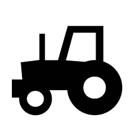
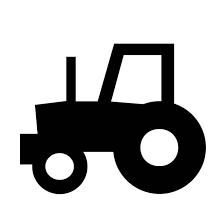
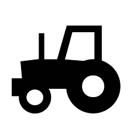
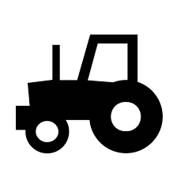

Bem-vindo ao Farm Security: Sua Fonte de Dicas para Segurança no Campo No mundo atual, onde a proteção do patrimônio e a segurança das pessoas são fundamentais, garantir a segurança das fazendas e propriedades rurais nunca foi tão importante. O Farm Security é o seu site especializado em oferecer as melhores dicas, estratégias e soluções para aumentar a segurança no campo. Nosso foco é fornecer informações práticas de segurança pública para proteger seu campo, sua família, seus funcionários e seus animais.